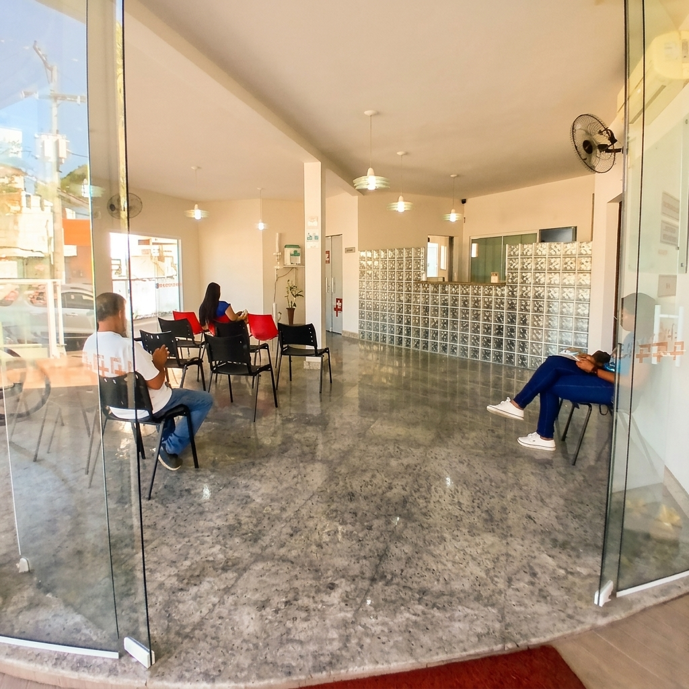
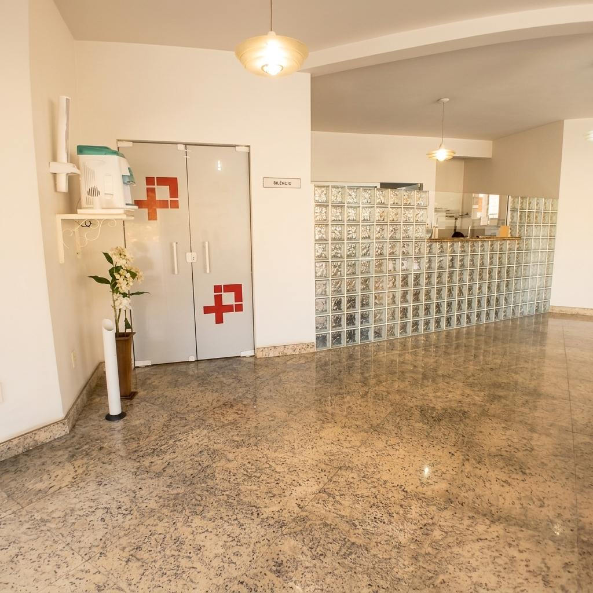
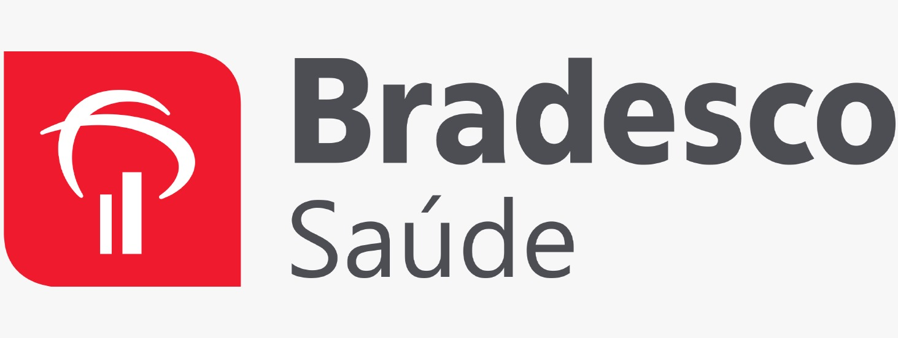
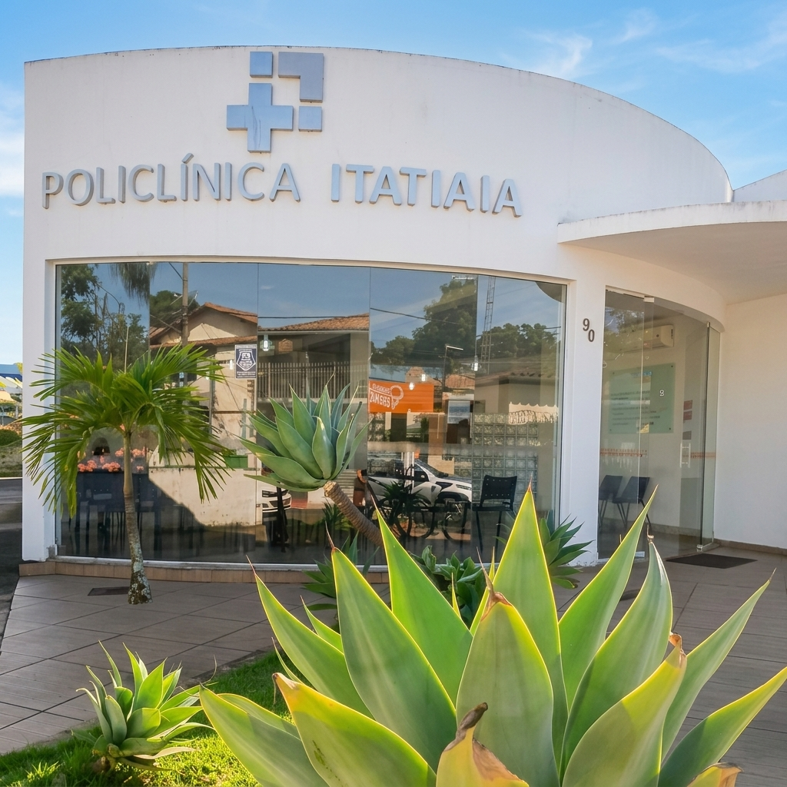

×

Há 37 anos cuidando da saúde de Itatiaia com atendimento humanizado, estrutura acolhedora e especialidades médicas para toda a sua família.
História e confiança local
Facilidade no seu atendimento


Anos de história
Muitas pessoas acreditam que, para ter acesso a consultas com médicos especialistas e atendimento de qualidade, precisam viajar para outras cidades da região. Mas a verdade é que você não precisa sair de Itatiaia para cuidar de quem você ama.
Com 37 anos de história, a Policlínica Itatiaia é um ponto de referência e acolhimento para gerações de famílias da nossa cidade. Oferecemos uma estrutura confortável e uma equipe de saúde qualificada e próxima de sua casa.
Nossa missão é acolher cada paciente com escuta, respeito e empatia, construindo uma relação de confiança verdadeira que vai além do consultório médico.
Cuidar da saúde das pessoas com humanidade, estrutura adequada e compromisso médico.
Acreditamos que o bom atendimento começa logo na recepção, com atenção e respeito.
Encontre consultas com profissionais qualificados em diversas áreas da medicina, tudo sem precisar se deslocar de Itatiaia.
Avaliação geral, acompanhamento preventivo, exames de rotina (check-up) e orientação para tratamentos diversos.
Cansaço frequente, mal-estar, dores no corpo, alteração na pressão ou exames periódicos de rotina.
Acompanhamento médico contínuo do crescimento, desenvolvimento, nutrição e vacinação infantil.
Acompanhamento mensal de bebês, prevenção de doenças na infância e orientação no desenvolvimento.
Diagnóstico e tratamento de patologias do aparelho digestivo (esôfago, estômago, fígado, vesícula e intestinos).
Azia recorrente, refluxo, dores no estômago, constipação intestinal ou distensão abdominal frequente.
Prevenção primária, diagnóstico e tratamento de distúrbios cardiovasculares e hipertensão arterial.
Dor no peito, palpitações cardíacas, falta de ar no esforço, pressão alta ou histórico cardiovascular familiar.
Acompanhamento integral da saúde da mulher em todas as fases de vida, focando em prevenção e exames periódicos.
Exames preventivos anuais, alterações no ciclo menstrual, menopausa ou aconselhamento contraceptivo.
Reeducação alimentar personalizada, planejamento de dietas e orientações nutricionais clínicas.
Perda ou ganho de peso saudável, controle de colesterol e glicose elevado, ou melhoria na rotina de alimentação.
Acompanhamento médico e clínico voltado à saúde mental, diagnóstico e tratamento de distúrbios emocionais.
Ansiedade generalizada, alterações intensas de humor, insônia recorrente ou crises emocionais frequentes.
Avaliação clínica, prevenção de problemas motores e tratamento de distúrbios óseos, musculares e articulares.
Dores articulares e na coluna, lesões musculares por esforço, torções ou dificuldade de movimentação.
Prevenção e tratamento clínico de doenças associadas à pele, unhas e cabelos para todas as idades.
Alergias ou coceiras de pele, acne acentuada, queda excessiva de cabelo ou alterações em pintas corporais.
Para tornar o acesso à saúde mais simples e prático, realizamos atendimentos particulares e por meio de diversos planos de saúde.

*Os atendimentos por convênio podem variar conforme a especialidade e a agenda do profissional.
Consultar se meu plano atende minha especialidadeNosso espaço foi inteiramente planejado para oferecer conforto, organização e bem-estar aos pacientes, desde a recepção até a consulta.

Cuidar da saúde não precisa ser difícil. Fale diretamente com a nossa equipe de atendimento pelo WhatsApp e escolha a melhor opção de dia e horário para você.
Tire suas dúvidas sobre consultas, exames, horários e planos de saúde aceitos. Nosso time de atendimento está à disposição.
(24) 98153-0023
R. Dona Apolinária, 90 - Centro, Itatiaia - RJ, 27580-000
Segunda a Sexta: 08:00 às 18:00
Sábado: 08:00 às 12:00